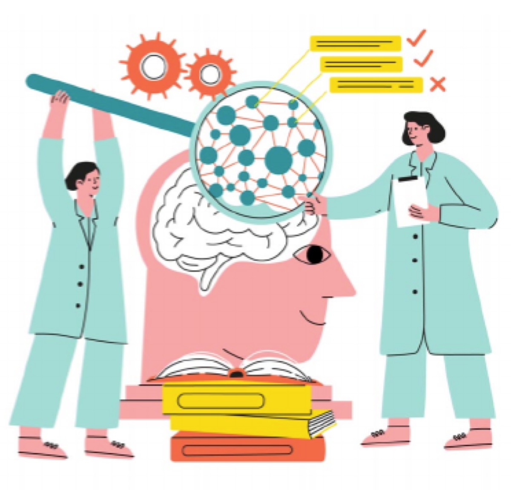
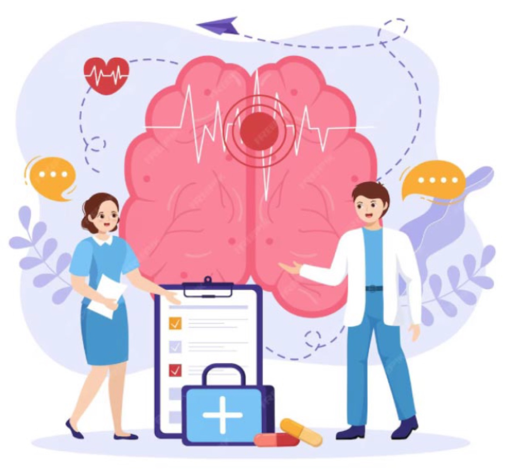

Понятные материалы о заболеваниях нервной системы, проверенные экспертами клуба. Их можно рекомендовать пациентам после приёма.

Рассеянный склероз — не приговор и не болезнь пожилых. Разбираем популярные заблуждения, которые мешают вовремя обратиться к врачу.

Давление, холестерин, ритм сердца и образ жизни: какие меры доказанно снижают риск инсульта и с чего начать.
Как отличить возрастную забывчивость от первых признаков болезни Альцгеймера и когда идти к неврологу.
Головокружение при вставании, сердцебиение, потливость: что такое дисавтономия и как её лечат.